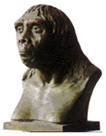
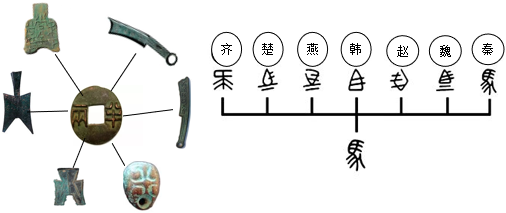
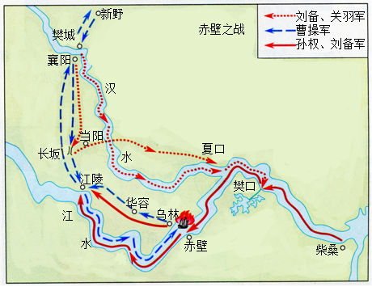

2018年北京市中考历史试题 · 选择题 第1、2、3、4、5题 · 对应解析
1．（3分）考古工作者制作完成“北京人头部复原像”（见图）的主要依据（ ）

A．周口店的自然环境B．遗址中的打制石器
C．北京人头盖骨化石D．北京人生活想象图
【分析】本题以“北京人头部复原像”为切入点，考查的是北京人的相关知识点。
【解答】图片是远古北京人的头像。依据“北京人头部复原像”，据此像能得到的结论是北京人头部仍保留着不少原始特征。北京人生活在距今约七十万年至二十万年的北京西南周口店的山洞里，北京人还保留了猿的某些特征，使用打制的石器，过群居生活，共同劳动（采集、狩猎）共同分享劳动成果。根据北京人的化石可以复原北京人头像，即根据考古挖掘来进行历史研究。
故选：C。
【点评】本题考查学生对历史史实的准确识记和理解能力。注意掌握北京人的有关内容。
2．（3分）它上承原始刻绘符号，后启青铜铭文，现代汉字由它演变而来。材料中的“它”是（ ）
A．甲骨文B．金文C．小篆D．隶书
【分析】本题以它上承原始刻绘符号，后启青铜铭文，现代汉字由它演变而来为切入点，考查甲骨文的相关知识。
【解答】本题考查中国古代的文字。根据所学，文字的发展历程为甲骨文、金文（铭文）、小篆、隶书、楷行草书。题干中上承原始的刻绘符号，下启铭文，可知应该为甲文，甲骨文已经具备了汉字的基本结构，是汉字形成和发展的重要阶段。
故选：A。
【点评】注意识记中国古代文字演变的相关知识。
3．（3分）周灭商以后，封黄帝后代于蓟，蓟城在今西城区广安门一带：封周王室贵族于燕，燕都在今房山区琉璃河镇。材料反映的政治制度是（ ）
A．禅让制B．分封制C．郡县制D．行省制
【分析】本题考查西周的政治制度。主要考查分封制。
【解答】材料提到的时间为西周建立之后，内容为分封先代帝王之后和同姓贵族，所以为分封制。为了巩固奴隶主政权，西周建立后，把土地和人民分封给王族、功臣和先代的贵族，让他们到各地去做诸侯，建立诸侯国；被封诸侯要服从国王的命令，要向周王贡献财物，不是诸侯要按田亩数向国王纳贡。
故选：B。
【点评】本题主要考查学生对西周的政治制度﹣﹣分封制的掌握。应理解西周的分封制。
4．（3分）对如图示意图解读正确的是（ ）

A．春秋时期的诸侯争霸B．战国时期的百家争鸣
C．秦朝建立后巩固统一D．汉武帝加强中央集权
【分析】本题结合秦朝统一货币和文字的图考查秦朝巩固统一的知识，考查归纳概括能力。
【解答】根据示意图可知，为统一文字、货币的内容。根据所学，秦朝建立后，秦始皇为加强统治，统一了文字、货币、度量衡。统一后的文字为小篆，货币为圆形方孔钱。
故选：C。
【点评】本题旨在结合秦朝统一货币和文字的图考查学生对秦朝巩固统一的知识归纳概括能力。学生需培养识图概括能力。
5．（3分）如图所示，地图反映的历史事件的影响是（ ）

A．为曹操统一北方奠定基础
B．为三国鼎立形成奠定基础
C．三国鼎立的局面正式形成
D．最终结束三国鼎立的局面
【分析】本题以赤壁之战形势图为切入点，考查赤壁之战。
【解答】根据图片“赤壁，孙权、刘备军，曹操军”可知图片为赤壁之战形势图，赤壁之战奠定了三国鼎立的基础。A项为曹操统一北方奠定基础的是官渡之战：C项222年孙权称王，三国鼎立局面正式形成：D项结束三国鼎立局面的是西晋建立后统一全国。
故选：B。
【点评】本题以赤壁之战为背景，考查学生识图和识记历史知识能力。